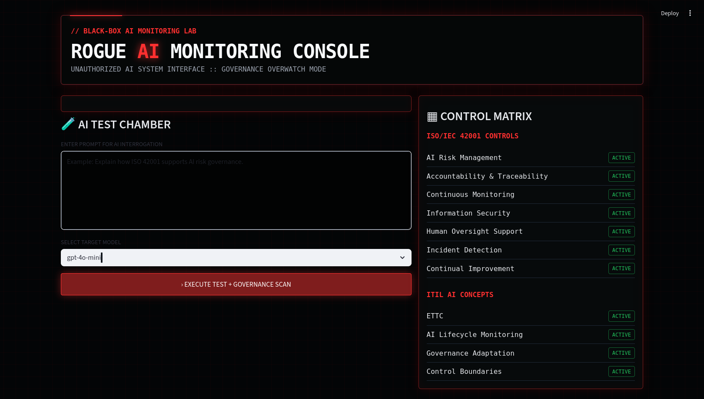

A cybersecurity and AI governance portfolio project demonstrating black-box AI monitoring, LLM output scanning, audit logging, risk scoring, and ISO/IEC 42001-aligned governance controls.
READ PROJECT BLOG VIEW GITHUB REPO
Scans LLM-generated responses for risky output patterns, sensitive data exposure, and policy violations.
Converts monitoring findings into risk levels and severity scores for governance review.
Records prompts, responses, timestamps, findings, and monitoring results for traceability.
Connects the lab to ISO/IEC 42001 concepts, ITIL AI governance, ETTC, and lifecycle monitoring.
This lab simulates how organizations can place a monitoring layer around black-box AI systems. The project sends prompts to an LLM, scans the output, flags policy risks, calculates severity, and creates audit evidence. The visual design uses a rogue AI console aesthetic, but the purpose is defensive AI governance and GRC portfolio demonstration.